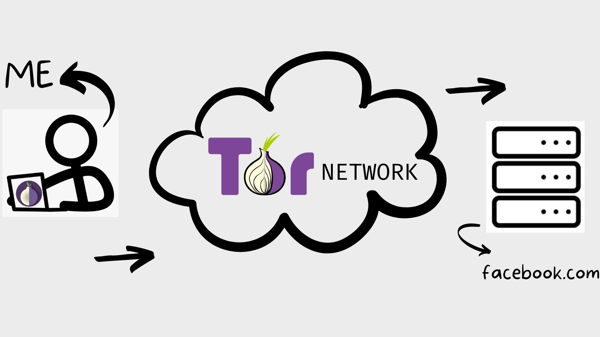
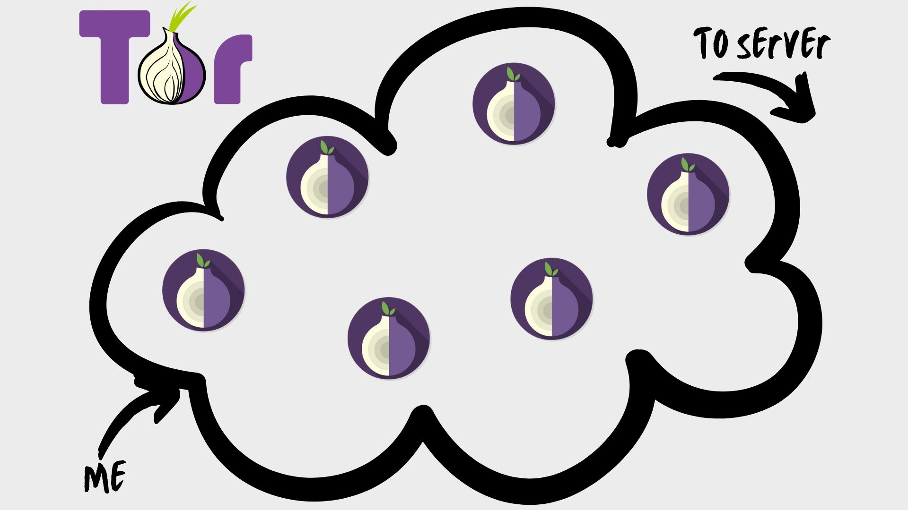
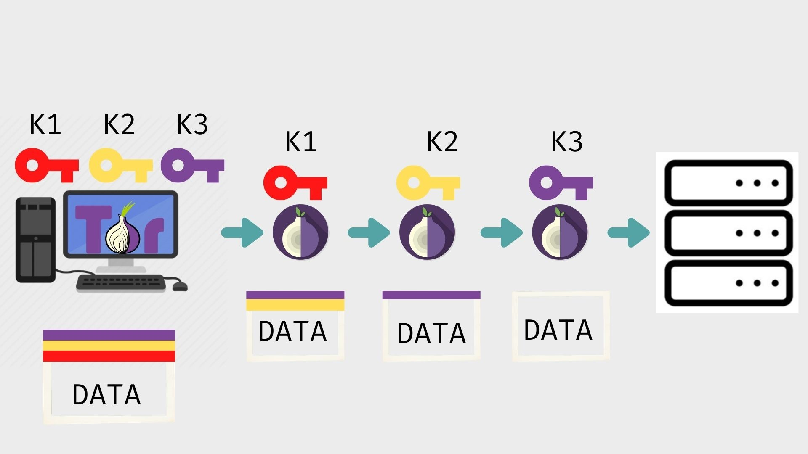

The complexities of Tor: Halloween edition
We’ve all heard of the deep web or the dark web, haven’t we? The scary network of websites everyone compares with hackers and cyber criminals. We’ve all seen the iceberg picture thing where 90% of the internet is hidden and we only get 10%. We’ve all heard stories of extreme criminality on the deep web. However, tor was meant for you, the normal internet user.

It was the mid-90s and internet was getting popular, really popular. Everyone had to have an internet connection to connect to the world. It was the new world. From that new world of internet came questions. Questions regarding privacy and tracking on the internet. These questions were a major issue but people then didn’t care. I mean why should they? There was a cool new magician in the town, who reads the manual? Theyyy should have. Between all the unencrypted HTTP ( HyperText Transfer Protocol) and the dial up connections and the fake sites and the flashy attractive gifs, getting someone’s information was easier than ever. You know, how people joke about how hacking in movies is just some pressing of keys and poof! Hacked! That was the reality then. It was that easy to get information. So, a couple of things had to happen, a better encryption had to be introduced, awareness among people had to be made common and cybercrimes had to be stopped with rules and regulations. In between all this reforms and rapid changes on the internet came the masked vigilante, the tor network. It was just an idea, an idea of the world free of corporations watching over you and your information getting in the hands of wrong people. Tor was based on the concept of getting data transfer off the hands of bad people. People cried joyfully, finally some privacy but nope. The tor network works on routers which most of you have today but then very few routers were even there on the tor network. Getting information on a tor network with few routers is like snatching candy from babies, it’s easy. 2002, revolution! Tor made itself publicly available and it became a non-profit project. You know what that means? That means anyone can install tor. The more the people install the tor network the more powerful it gets, the more secure it gets. It gets better, now tor is not just a network, it can be implemented in browsers to allow to connect to tor networks. That’s the story of the inception of the greatest privacy revolutions.
Encryption VS Anonymity
The two words are different. Encryption is making the data unreadable to someone who’s trying to read what you’re talking about with your friend on discord. Hashing algorithm is a very popular advanced and secure encryption technique. To encrypt data is talking in your own secret language with the server or the other computer you’re talking to. Anonymity is different. What if you don’t want the reader (technically called, sniffing) to even get where the data is going because normal data transfer protocols like TCP/IP tell the sniffer the locations of the sender and the receiver. Anonymity is the art of not letting the sniffer know that you even talked to the server. Tor helps you with anonymity while the encryption methods remain fairly the same.
How does this work?
First of all, complicated. Very complicated. Very very complicated. To read about the details of the tor protocol of transfer of data visit this. I am just scratching the surface and the surface is this complicated.
To setup tor is as easy as downloading the tor browser. You could also download the special tor software which will make your whole computer run on the tor network but that dramatically slows down your computer. To volunteer to act as an onion router you must also have a reasonable bandwidth because you’ll be connecting to, sometimes, many computers at once and that requires more than at least 256kbps of bandwidth.
As you should know, tor uses routers as nodes. Call them tor nodes, call them onion routers, whatever. These nodes are in this huge cloud of nodes or routers. These routers are just computers like yours and mine and when you install tor you are volunteering to act as an onion router. This huge system of networks has thousands of routers.
All scattered across continents. This is very significant in the building of an untraceable network. All routers are a part of the huge network that is the tor network.
Let’s go to a server. Let’s browse Facebook. Facebook has its huge servers visible to everyone. I don’t want anyone to see that I am using Facebook or people would call me an old grandpa and what not so I use the tor network

Tor implements 3 completely random hops by default before reaching the servers of facebook.com. These “hops” are the number of routers it goes through before reaching the server. The first router is called the entry node, then comes the relay node and finally the exit node. The priority is to prevent the routers and the server to know where the data is coming from. This is tor, people. The most secure connection you can have on planet earth.


So the router reading this knows what to do. It just... does it, no questions asked.
That’s how your data gets from this side to that side

Using three chosen, completely at random, nodes on the network, your data reaches the servers of facebook.com. This connection between you and the nodes and the server is called a tor circuit. When the server has to talk to you, it does the exact same thing just in the opposite direction (of course it does not use the same nodes).
It gets better.
Tor requires many intermediary computers in the network. So, if there was any unencrypted personal data, now 4 other people have it.
Fixing that is easy, use some kind of encryption. Tor has its own encryption which might be where it gets its “onion” name from.
The rules of the game are simple. Everyone gets a key. I get 3 keys and that’s how it goes. These keys are encryption keys when I encrypt my message with all of these 3 keys, my messages get these cool layers of encryption like an onion.

K1 can only be decrypted with the same K1 key, the similar is the case for the other keys. When I encrypt the data with all three keys, each tor node takes off one layer of encryption. The first onion node with the K1 can only encrypt one layer off this data data, consequently it can make no sense of the data. The second node in the circuit uses K2 and then K3 is used. The last onion node is also known as the exit node and it’s between this node and the server when the data packet is the most vulnerable but the packet is still encrypted with, probably, good encryption algorithms.
Tor: the ultimate privacy solution?
Uhh not completely but yes, tor is the closest to privacy human race has ever reached. If you sniff the data packets between the last onion node and the server, you might get an idea of what and where the data is about and from. The data packet is most likely to be encrypted with the normal HTTPS protocols, but yes that’s the vantage point you would want to choose to… you know, to do the shady stuff. However, you’ll have to find the last node first (practically almost impossible). Tor has a solution to this too: hidden services. If all this anonymity and encryption is the tor network, hidden services are the deep web.
That is a whole different story. Until then you might want to download that tor browser and browse some real private websites. Have a good bandwidth too, you might be serving as nodes.